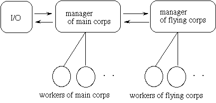

(53) Go Playing Game System "GOG"(The Parallel Version)
Machine: Multi-PSI
Environment: PIMOS, SIMPOS
Language: KL1, ESP
Source Code: 1.5 MB
Documents: Manual (English/Japanese)
Overview
Go Playing Game System
Configuration

Feature
Due to the high branching factor of the Go game tree, computer chess
type full board search becomes hopeless in this domain. This system is
the first Go playing game program on the parallel inference machines
in the world. GOG has the following three features.
- It simulates the thinking mechanism of a human player.
- The large tasks are performed in parallel.
- The new "frying corps" technique has been applied to improve the
strength of GOG considerably while retaining the real-time
response(see reference).
References
- Experimental Version of Parallel Computer Go-Playing System
"GOG", S.Sei et al., ICOT-TR 718
FTP
- Go Playing Game System "GOG"(The Parallel Version) [834K]

www-admin@icot.or.jp